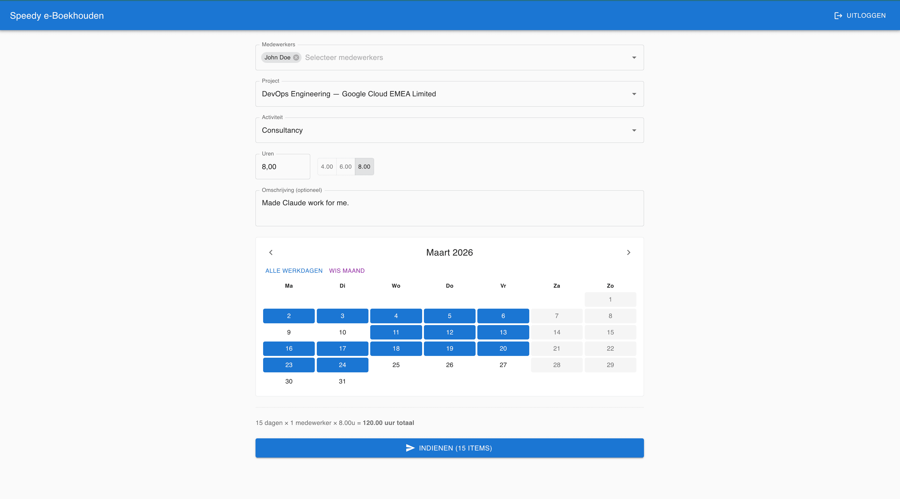
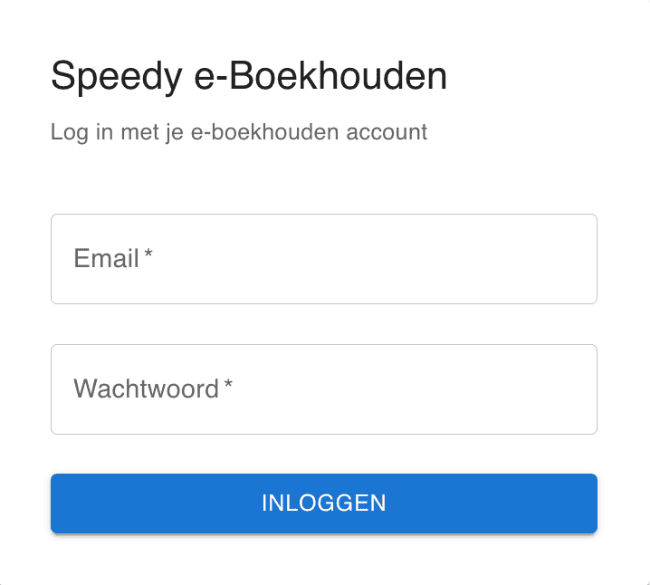
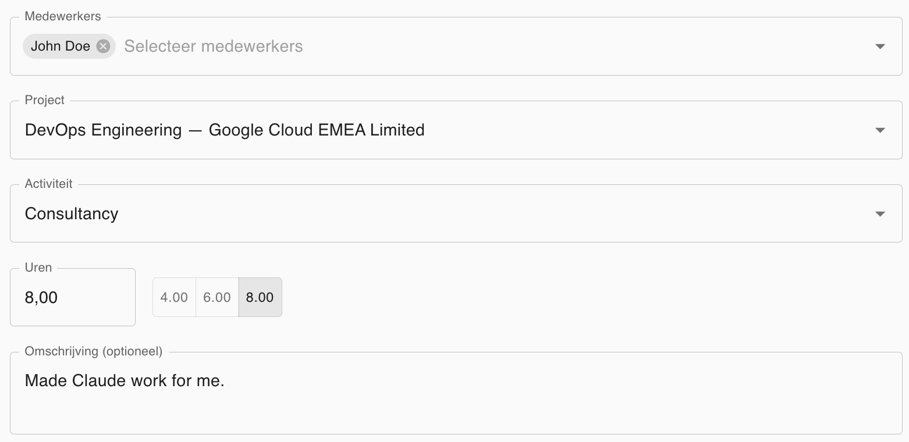
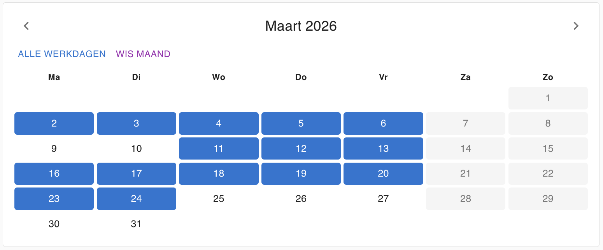

Supercharge je
e-Boekhouden.
Boek afschriftregels met voorstellen van de AI, laat facturen en bonnetjes uitlezen, verwerk wat er in je mailmap binnenkomt en voer uren voor een hele maand in één keer in. Inloggen doe je met een passkey.
Je maakt een account aan met een passkey en koppelt daarna je e-Boekhouden-account.

Met en zonder Speedy vergeleken
Zonder Speedy
- Uren dag voor dag en medewerker voor medewerker invoeren
- Elke afschriftregel met de hand boeken
- Factuurgegevens uit een PDF overtypen
- Zelf de juiste grootboekrekening opzoeken
- Zelf bijhouden wat er nog openstaat
- Elke week weer eindeloos klikken
Met Speedy
- Uren voor een hele maand en meerdere medewerkers in één keer
- De AI stelt per afschriftregel een boeking voor
- Upload een factuur of bonnetje en de AI leest de gegevens uit
- Controleren, boeken, klaar
- De inbox laat zien wat er nog openstaat
Vier tools in één app
Afschriften, documenten, facturen en uren, rechtstreeks in je eigen administratie in e-Boekhouden.nl.
Inbox
Je startscherm heeft twee tabbladen: Afschriften voor je bankregels en Documenten voor alles wat in je mailmap binnenkomt. Bij elk tabblad zie je hoeveel er nog openstaat.
Bulk-urenregistratie
Kies een of meer medewerkers, een project en een activiteit, klik de dagen aan in de kalender en verstuur alles in één keer. Kies je alle werkdagen, dan slaat Speedy weekenden en Nederlandse feestdagen over.
Afschriften verwerken
De AI stelt voor elke onverwerkte afschriftregel een boeking voor: grootboekrekening, btw-code en omschrijving. Betaalt een regel een openstaande factuur, dan stelt Speedy voor om die te koppelen. Klopt het voorstel, dan boek je de regel met één klik.
Factuurverwerking met AI
Upload een factuur of bonnetje als PDF, JPG of PNG. De AI leest leverancier, factuurnummer, datum, bedragen en btw uit, stelt een grootboekrekening voor en waarschuwt bij verlegde btw. Na je controle boek je de factuur, en de betaling als die al op je afschrift staat, in één stap.
Passkey-authenticatie
Je logt in met je vingerafdruk, je gezicht of de schermvergrendeling van je apparaat. Er is geen wachtwoord dat kan uitlekken, en een passkey werkt alleen op speedy-eboekhouden.nl, dus aan een nagemaakte inlogpagina heeft een oplichter niets.
Je eigen API-sleutel
Je gebruikt je eigen Claude API-sleutel van Anthropic en betaalt Anthropic rechtstreeks voor wat je verbruikt. Speedy rekent niets door.
Geleerde boekingen
Boek je een afschriftregel met dezelfde omschrijving en tegenrekening twee keer op dezelfde manier, dan onthoudt Speedy dat. Daarna stelt Speedy die boeking zelf voor, zonder AI. Onder Instellingen zie en wis je wat Speedy heeft geleerd.
Open source
De volledige broncode staat onder de MIT-licentie op GitHub. Je kunt alles nalezen, Speedy zelf draaien of meebouwen.
Geen wachtwoorden opgeslagen
Je wachtwoord voor e-Boekhouden.nl gaat door naar e-Boekhouden en wordt nergens bewaard. Het sessietoken dat e-Boekhouden teruggeeft en je API-sleutel slaat Speedy versleuteld op.
Hoe het werkt
In drie stappen van een nieuw account naar je eerste boeking.
Registreer met een passkey
Maak een account aan met je naam, je e-mailadres en een passkey. Een wachtwoord kies je niet: je bevestigt met je vingerafdruk, je gezicht of je schermvergrendeling.

Koppel je e-Boekhouden-account
Log in met je e-mailadres en wachtwoord voor e-Boekhouden.nl. Speedy stuurt ze door naar e-Boekhouden en bewaart alleen het sessietoken dat terugkomt, versleuteld. Verloopt die sessie, dan koppel je opnieuw. Gebruik je MFA, dan vul je ook de code in die e-Boekhouden je mailt.

Ga aan de slag
In de inbox zie je onder Afschriften en Documenten wat er nog openstaat. Daar boek je afschriftregels met de voorstellen van de AI, laat je facturen uitlezen en verwerk je de documenten uit je mailmap. Uren voer je in onder Uren.

Veelgestelde vragen
Wat is Speedy e-Boekhouden?
Een webapp die werkt op je eigen administratie in e-Boekhouden.nl. Je boekt afschriftregels met voorstellen van de AI, laat facturen en bonnetjes uitlezen, verwerkt de documenten die in je mailmap (Mail & herken) binnenkomen en voert uren in voor meerdere medewerkers tegelijk. Wat je boekt, staat meteen in e-Boekhouden.
Is het echt gratis?
Ja. Speedy e-Boekhouden zelf kost niets. Voor de AI-functies (boekingsvoorstellen en het uitlezen van documenten) gebruik je je eigen Claude API-sleutel van Anthropic. Die kosten betaal je rechtstreeks aan Anthropic, naar gebruik, dus je ziet zelf wat je uitgeeft.
Wat is een passkey en hoe werkt dat?
Een passkey vervangt je wachtwoord. Je logt in met je vingerafdruk, je gezicht of de schermvergrendeling van je apparaat. De geheime sleutel blijft op je apparaat of in je wachtwoordmanager. Onze server kent alleen de publieke sleutel, en daarmee kan niemand inloggen. Een passkey werkt bovendien alleen op de site waarvoor hij is gemaakt, dus een nagemaakte inlogpagina heeft er niets aan. Alle moderne browsers ondersteunen passkeys.
Bewaart Speedy mijn inloggegevens van e-Boekhouden?
Nee. Je e-mailadres en wachtwoord voor e-Boekhouden.nl gebruikt Speedy alleen om in te loggen, en daarna worden ze nergens bewaard. Wel bewaart Speedy het sessietoken dat e-Boekhouden teruggeeft. Dat staat versleuteld in je sessie en in de database, zodat je niet bij elke login opnieuw hoeft te koppelen. Met Verbinding verbreken wis je het.
Wat doet de AI precies?
Speedy gebruikt Claude van Anthropic voor twee dingen. Voor je afschriftregels stelt de AI een boeking voor: grootboekrekening, btw-code en omschrijving. Van facturen en bonnetjes, geüpload of uit je mailmap, leest de AI leverancier, factuurnummer, datum, bedragen en btw uit en stelt een grootboekrekening voor. Er wordt niets geboekt zonder dat jij op een knop drukt.
Heb ik een eigen API-sleutel nodig?
Voor de AI-functies wel: je gebruikt je eigen Claude API-sleutel van Anthropic. Je documenten en afschriftregels gaan dan alleen naar Anthropic, onder je eigen account, en je ziet zelf wat het kost. Speedy slaat de sleutel versleuteld op en gebruikt hem alleen voor jouw account. Zonder sleutel werkt de urenregistratie gewoon, en zie je je afschriftregels zonder voorstellen van de AI.
Wat bewaart Speedy in de database?
In PostgreSQL staan je Speedy-account met je passkeys, je API-sleutel en het sessietoken van e-Boekhouden (allebei versleuteld), eventuele SOAP- en REST-gegevens (ook versleuteld) en je geleerde boekingen. Sessies en tijdelijke AI-uitkomsten staan in Redis. Je wachtwoord voor e-Boekhouden staat nergens. Verkeer tussen je browser, Speedy, e-Boekhouden.nl en Anthropic loopt via HTTPS. Op de beveiligingspagina lees je wat er precies waar staat en hoe lang.
Werkt het met tweestapsverificatie (MFA)?
Ja. Staat MFA aan voor je account bij e-Boekhouden.nl, dan vraagt Speedy tijdens het koppelen om je verificatiecode. Die code stuurt e-Boekhouden je per e-mail. Dat is hoe e-Boekhouden MFA heeft ingericht; Speedy heeft daar geen invloed op.
Kan ik Speedy gebruiken met mijn team?
Gedeelde teamaccounts zijn er niet. Elke collega maakt een eigen account aan met een eigen passkey en koppelt met een eigen login voor e-Boekhouden. Wel kun je in één keer uren invoeren voor meerdere medewerkers uit je administratie.
Ik vertrouw het niet helemaal. Kan ik het veiliger gebruiken?
Ja. Maak in e-Boekhouden een apart gebruikersaccount met beperkte rechten aan en geef dat alleen toegang tot wat je via Speedy wilt doen. De volledige broncode staat op GitHub, dus je kunt alles zelf nalezen. Je kunt Speedy ook zelf hosten.
Ik krijg een foutmelding bij het koppelen van e-Boekhouden. Wat nu?
Bij de eerste koppeling ziet e-Boekhouden een inlogpoging vanaf een onbekend IP-adres, namelijk dat van onze server. e-Boekhouden blokkeert die poging en stuurt je een e-mail om het adres goed te keuren. Klik op de link in die mail en koppel daarna opnieuw. Dit hoef je in principe maar één keer te doen.
Welke browsers worden ondersteund?
Speedy e-Boekhouden werkt in alle moderne browsers: Chrome, Firefox, Safari en Edge. Passkeys werken op Windows, macOS, iOS en Android. Op je telefoon werkt Speedy ook, maar het is gemaakt voor een groter scherm.
Minder tijd kwijt aan je administratie?
Maak gratis een account aan met een passkey en probeer het op je eigen administratie.
Gratis aan de slag